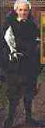

THE EXECUTIVE COUNCIL
According to Art. 12 of its bylaws, PASIC is led by its President and a staff of Officers that compose the Executive Council. The Officers are co-opted among the members of PASIC by the President. The Executive Council is composed of a Vice-President, a Secretary, a Treasurer, an Editor and a Director.
Current Officers
| Position | Name | Country | |
| President | Victor Manta | Switzerland | manvic_99spaam@yahoo.com |
| Vice-President | Helen Fowler | USA | hffowlerspaam@qtm.net |
| Treasurer | Susan M. Keil | USA | susan_m_keilspaam@yahoo.com |
| Editor | Susan M. Keil | USA | smk63spaam@yahoo.com |
| Director | Gerhard Batz | Germany | batz.hausenspaam@t-online.de |
| Victor Manta, President | ||
|
 |
|
| Helen Fowler, Vice-President | |
|
|
| Susan M. Keil, Editor and Treasurer | ||
|
|
|
|
| Gerhard Batz, Director | |
|
|
If you agree with our Statutes and you wish to join us at PASIC, please click the button:

| Revised:
Jan. 18, 2019
. Copyright © 1996 - 2019 by Victor Manta, Switzerland. All rights reserved worldwide. |
|
|